Travel to San Diego - Sunday
Becky and I are on an 11 day Mexican Riviera & Sea Of Cortez cruise. These emails are installments from my trip report.
This morning I picked up a rental car for our drive to San Diego. From my house it’s a 40 minute walk to Avis. The office opens at 9am and I was there about five minutes early. By the time the office opened at five minutes after the hour, there were three of us lined up and I was the first in line. It took about 20 minutes for the computers to get warmed up and for me to get my rental contract. The car I got this time was a Nissan Rogue. A decent car for a three hour drive south.
I parked the car in the garage while we were still getting ready and when I moved the car out, I noticed that there were two small spots where oil was leaking, not a good sign. Later in the day, I got a message from Avis asking if I had found anything in the car. There was some trash and used tissues but no cooking pot, which the previous renter thought they had left in the car. The office was closed by the time I listened to my messages, so I called back on Monday.
After loading our luggage into the car, we were on the road by 10:35 am for the 200 mile drive. We encountered a lot of stop and go traffic along Hwy-101 and I-405 near LAX. In Orange county the traffic also came to a stop for some large cardboard boxes and about five plastic Christmas tree stands scattered across three or four lanes. We stopped for lunch at Wendy’s. I gassed up the car at Costco in San Diego. This Costco has the smallest and most congested parking lot of any Costco that I’ve been to.
Our hotel in San Diego is a Marriott Towneplace and not in the best location. This week there is a big convention in San Diego and most of the good hotels are fully booked. The hotel doesn’t have any parking for check-in. There is a $35 per day garage, but that makes no sense for someone just needing to park for a few minutes. I did find some 30 minute free parking on the street while we unloaded the car and checked in. After we dropped off our bags, I drove to the airport rental car terminal to return the car. From the terminal I walked about three blocks to the Middletown Station and took the San Diego Trolley downtown and from there a short walk back to the hotel. I did notice homeless people sleeping on the sidewalks near the Trolley stations and downtown at the civic center. Also there were some homeless riding the Trolley. The weather in San Diego was a bit on the cool side, partly cloudy with the temperature in the lower 60s.
The two restaurants that Becky had picked out for dinner were closed, so we bought sandwiches from Domino’s. Domino’s was convenient since it was across the street. We each had a ranch, chicken and bacon sandwich which we took back to our room to have with beer and chips that we had brought with us. The sandwich was toasted with a bit of melted cheese. It tasted good, but a bit on the dry side.
San Diego - Monday
I got up early and I showered first. The shower was very weak, just above a dribble. The shower only has a temperature knob and no flow adjustment. I took the shower head off, found some debris like some small pieces of leaves and a seed. So I cleaned the junk out and removed the flow restrictor o-ring for good measure. Now the flow is almost too strong. Before checking out of the hotel, I’ll need to replace the little rubber o-ring.
Hotel breakfast was decent. I would rate it above average as far as free hotel breakfasts go. The coffee was good and there was a good selection of toppings for oatmeal. I was able to put together a DIY trail mix made from walnuts, pumpkin seeds, cranberries and chocolate chips.
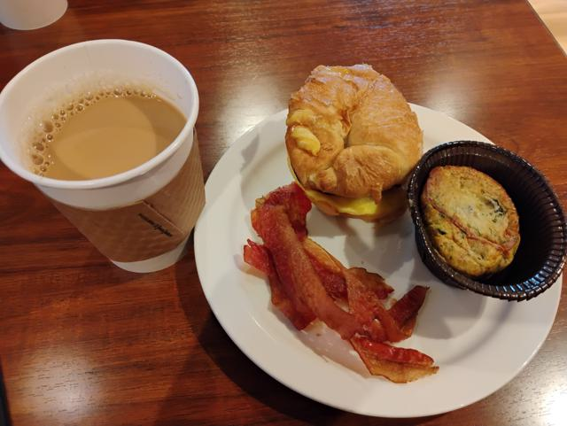
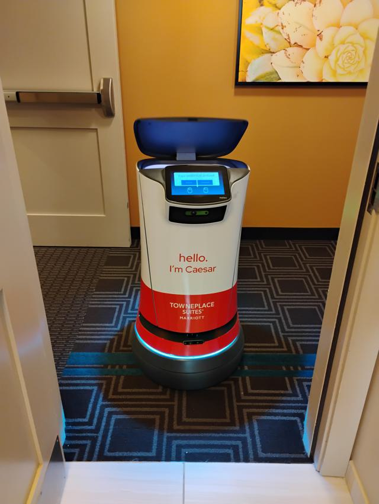
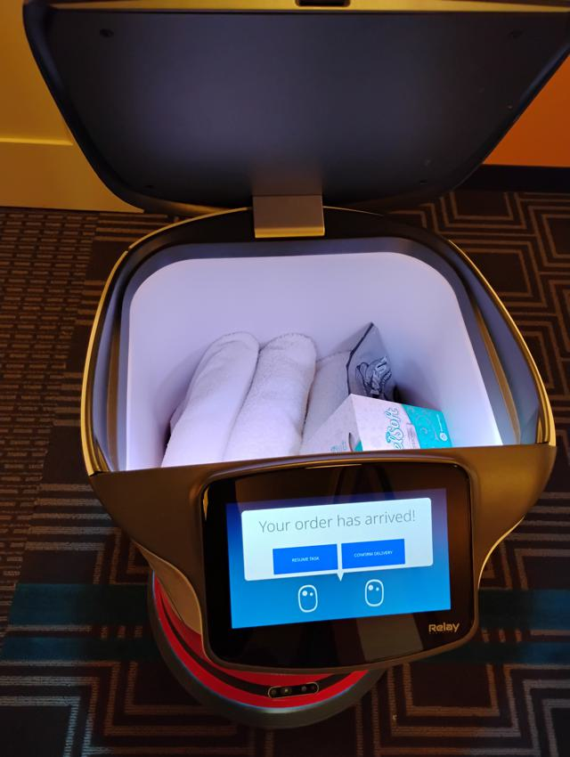
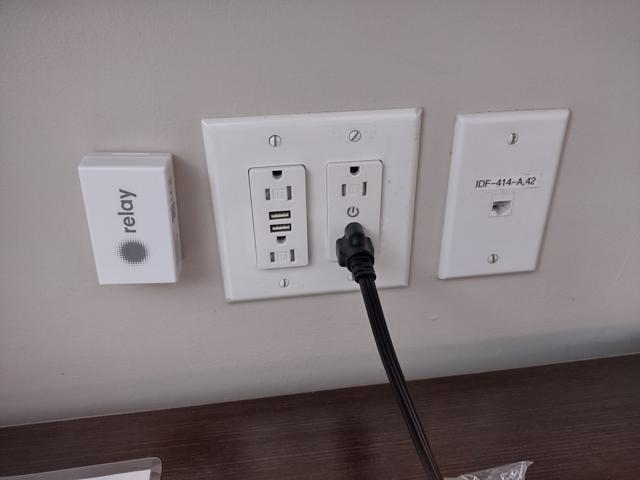
The day started off with cloudy skies, then cleared up to mostly sunny. The high 63F and the winds were to 10 mph. In the shade with the slight breeze, it was a little chilly.
Around 10:30 am we left the hotel and walked two blocks to the Trolley station and bought two one way tickets. My plan was to purchase an all day ticket, but they were not available at this ticket machine. While we were waiting for the next Trolley a security guard said hello and asked to see our tickets and we weren’t even on the train. The ride to Old Town took about 20 minutes.
Last year when we visited Old Town, many of the shops were closed. Today, they all seemed open. The place was decorated for Christmas and many of the shops were selling Christmas items and decorations. We stopped into an olive oil shop and tasted some of the oil and balsamic vinegar. I would have bought some of the olive spread, but I didn’t want to carry it onto the cruise ship.

The doors to the Immaculate Conception Catholic Church were open so we stopped in to look at the church. They were having a service so we sat in the back for a few minutes.
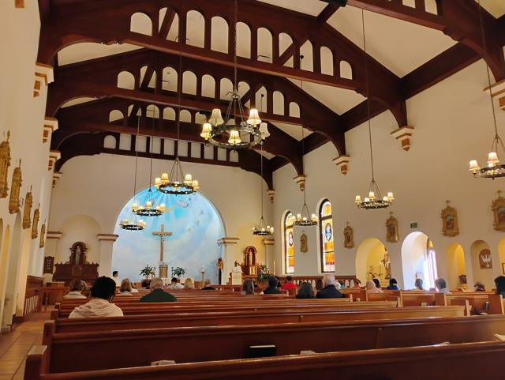
We had lunch at a restaurant called Fred’s Tacos y Tequila. Becky had enchiladas and I had a burrito. The food was good and filled us up. This was going to be a late lunch or early dinner for us.
After lunch we took the trolley to Little Italy and walked to the San Diego Maritime Museum. We had an AARP two for one coupon which Becky had printed before we left home. We spent about two hours exploring the ships. The Maritime Museum has five ships that can be viewed. The museum was not busy and we had the ships to ourselves for the most part. The Star of India and the submarine USS Dolphin were the most interesting to me.
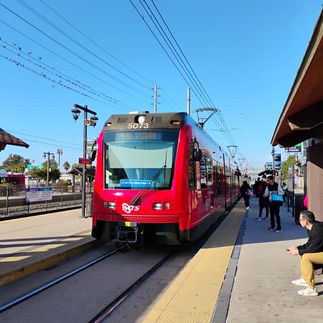
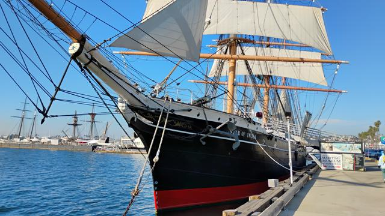
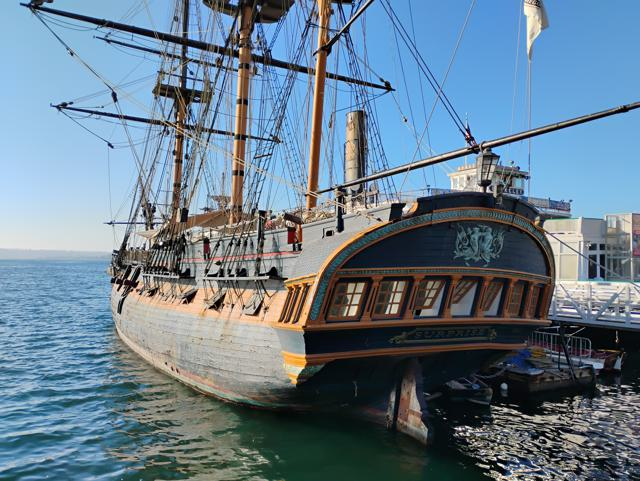
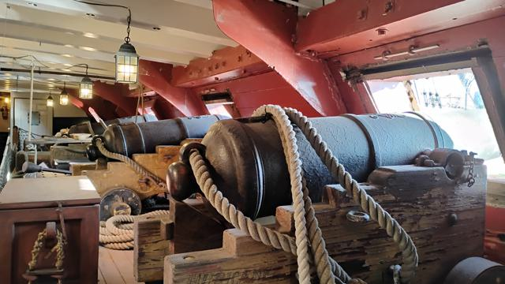
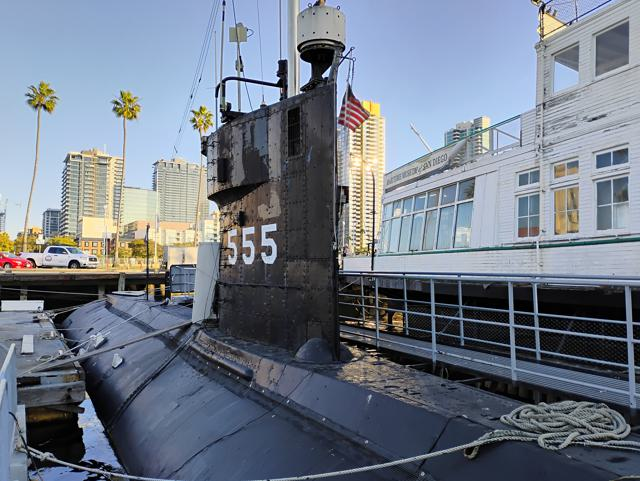
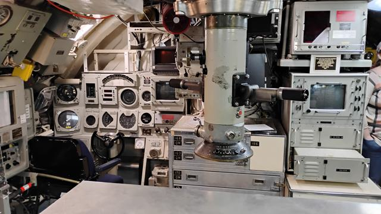
We decided to walk back to our hotel, which was about a one mile walk over most flat ground. My step count for the day was 15,265 which Fit Bit says is 7.23 miles. Later we finished some of the snacks we had brought since we didn’t want to take them on to the cruise ship.
San Diego - Tuesday
I woke at 6am to shower and do some packing. Breakfast selections this morning were sausage patties, scrambled eggs and jalapeno poppers. The jalapeno poppers weren’t that good. The sausage patties and eggs were typical hotel breakfast food. In other words, edible but nothing to rave about. There was one family with small kids in the breakfast dining room area. The other guests seem to be mainly business people.
I put the flow restrictor o-ring back into the shower head and the shower flow with the restrictor is much better than it was before.
Today is embarkation day. Our cruise is an 11 day Mexican Riviera and Sea of Cortez cruise.
This is the route of our cruise, six ports and four sea days.
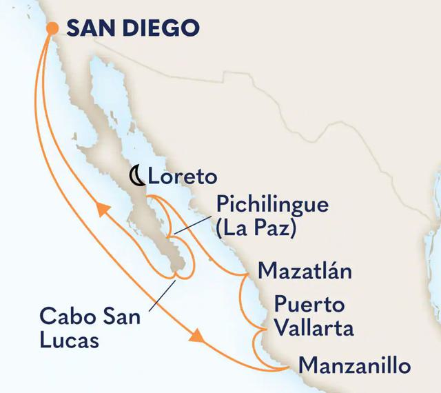
The plan this morning was to leave our room at 10:40 am, check out of the hotel, call Lyft and wait in the lobby for the driver to show up. This should get us to the port around 11:00 am. The cruise check-in time printed on our tickets is for 12:00 noon. It says 12:00 noon for everybody so I wonder if the whole ship is going to show up at noon. I think the terminal actually opens at 11:00 am.
We left our room around 10:30 to check out. I called the Lyft and we had to wait about 10 minutes before he showed up. The drive to the cruise terminal took about 10 minutes where we unloaded our bags, walked right into the terminal, went through security and we were at the check-in counter a minute or two later. From there we walked directly onto the ship. We didn’t have to wait in any lines.
Our first stop was at the restaurant reservation desk where we made reservations for the Italian restaurant for two nights and lunch at the steakhouse for two days. These are paid venues and we’ll use some of our on board credit to pay for these charges.
We went to our room to pick up our key cards and dropped off our carry-on bags. We needed our room keys in order to order drinks at lunch. Some guy in the elevator said that the rooms aren’t ready yet but we said we were going to go pick up our room keys. Our room was ready. We dropped off our bags and used the bathroom.
We stopped by the Neptune lounge to talk with the concierge and check out what they had to offer in the lounge. The assistant concierge gave us the orientation and explained what we could expect and what services they offer.
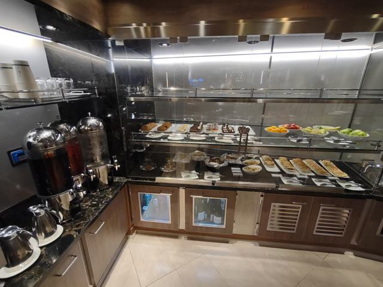
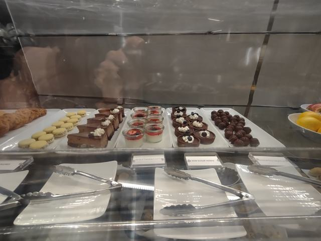
Then we went to the Dutch Cafe for lunch. I got a ham and cheese sandwich, split pea soup, a side of fries and a Belgian beer. Becky ordered a ham and cheese sandwich, side of fries and the same type of beer.
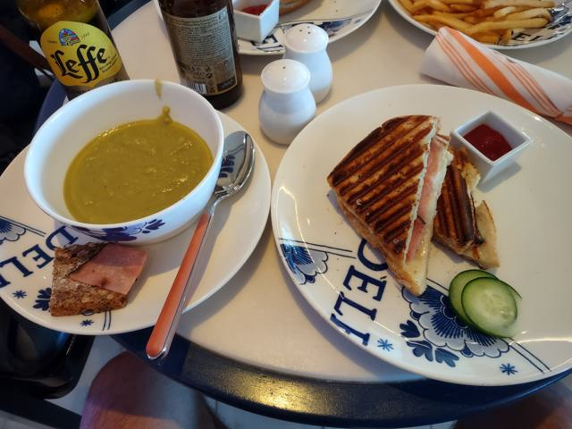
After lunch we want to explore the ship. We stopped by the spa and I made an appointment for a haircut later in the cruise.
At 1 pm we went to our assigned muster station to check in. We were told to watch the safety video on the TV back in our room.
We went back to the lounge to make a cup of coffee with their fancy coffee machine and then back to the room to see if our luggage had arrived. Only mine was there so I unpacked.
Our cabin stewards stop by to say hello and give us an orientation. I mentioned that the water in the coffee maker was low and he said we can fill the reservoir from the sink. On other Cruise lines the butler does this for us. Here we will need to fend for ourselves.
For a change I was able to do all of my unpacking while we were waiting for Becky’s suitcase to arrive.
When Becky’s suitcase arrived she was able to do some unpacking while making a mess of the room and moving many of my clothes out of her way. Our suitcases fit under the bead and we can roll them out if we need anything stored on there.
Later we attended a raffle in the shops, but we didn’t win, but the prize was a nice selection of various Holland branded merchandise. We looked around at the merchandise to see what we were going to spend our credit on. I think I might buy a sweater or a shirt. Becky also found a shirt she liked. We will make these purchases later in the cruise once we see how our budget is working out.
Our non-refundable on board credit amount is $1050. This is a lot more than we usually get. The credit comes from a combination of - a Cruise line promotion, something called Goodwill future cruise credit, AARP, “Welcome home” and Shareholder’s benefit. We hope about half of the credit can be applied to the daily service charge, as on previous cruises ($19 per person per day). We will monitor our room statement every day to make sure that the charges are being applied as we think they should. We also have a separate shore excursion credit and we will take a couple of shore excursions.
At 4pm we went back to the room to get ready and change for dinner.
For dinner Becky ordered the Chicken and corn soup: smoked chicken, roasted corn, scallions and bell pepper. This was a clear broth soup, which she said would be good if it was snowing outside and she had the cold. Her main dish was Beef Pot Roast. She said this was good.
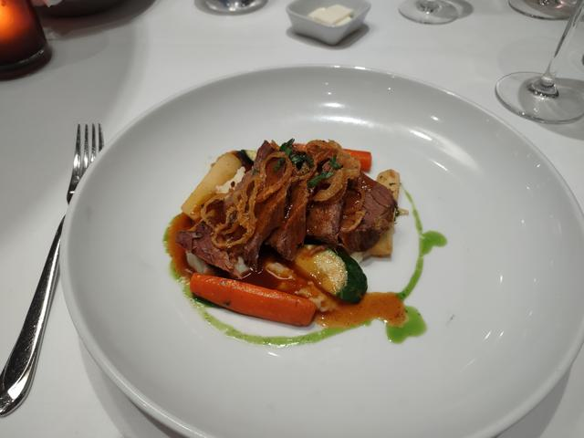
I ordered a Classic Caesar salad to start. For my main course I ordered Mahi Mahi Diablo. This was good and with just enough spice to make it interesting.
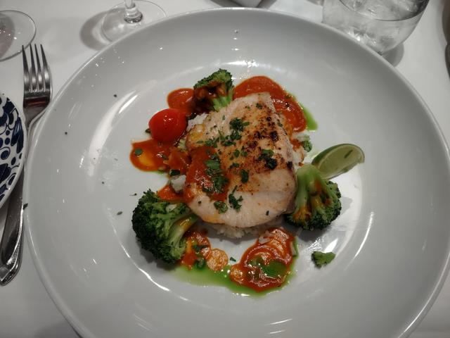
At 7pm we went to the Neptune lounge reception. Only six people attended. It was just a repeat of the orientation we got earlier in the day but with a glass of wine or champagne.
Later we listened to the signers in the venue called Billboards. Here there are two pianos and two singers/players to entertain the guests with songs, usually following some theme. Tonight’s theme was “Hot 100” for the first set. Later in the evening the theme changed to “Hot R&B” and then requests for the last set of the evening.
Sea Day - Wednesday
Today was a sea day, one of two, on our way to Manzanillo. We were up early. I tried to make a cup of coffee with the coffee maker in our room, but it seems that the machine only makes small cups of espresso. Later I asked our room steward about making coffee and he said to call room service if I wanted coffee. Behind the coffee machine I found a bluetooth speaker, so now we can have some music in our room.
We attended an event called “Coffee with Alex”, who is the cruise director – we only stayed for a minute. She was interviewing the gift shop manager, who was from Zimbabwe. We then went to the art studio for a class. It was a good thing we arrived early since the class filled up and people were turned away.
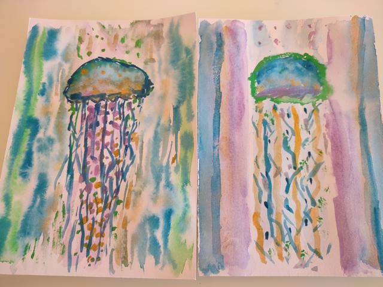
As we were walking around the ship Becky found two ducks. Here is one of them.
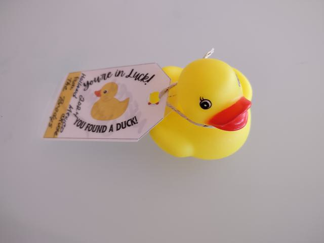
For lunch we went to a Mexican brunch being offered in the main dining room. There was a signature drink suggested with the menu called the Pamplemousse Martini, so we ordered two of them.
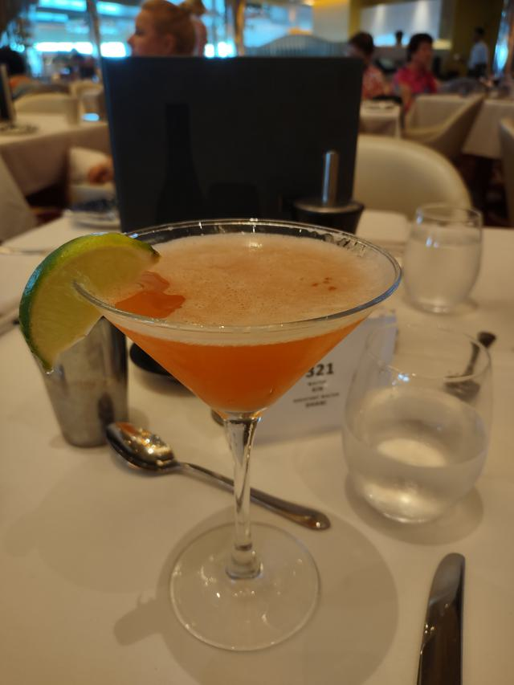
On this cruise we have Holland’s version of the drink package. We each get 15 drinks per day, which seems like a lot, but bottled water and specialty coffee is included. We can’t combine our allotment of drinks so we need to drink responsibility and keep track of our drink count each day. Towards the end of each day, if we need water for a port day, we will pick up several cans of water to fill up our water bottles.
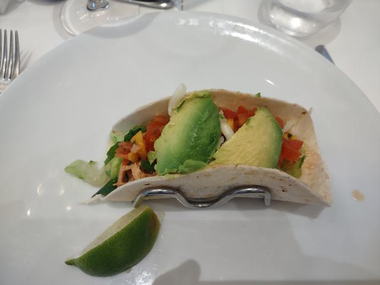
We attended afternoon tea. We sat with a solo traveler from San Diego. She’s a retired judge advocate for the County and has been a widow for a few years. She is traveling with a friend she’s known from high school. She has been on more than 70 cruises.
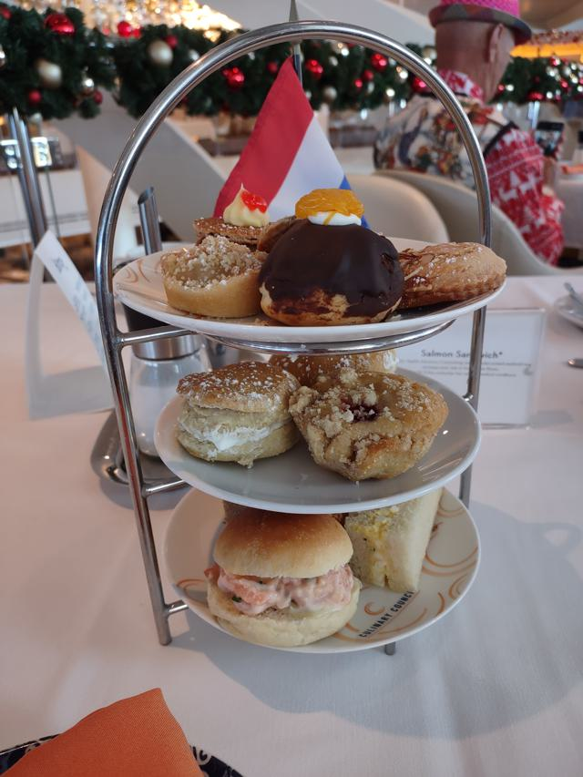
For dinner, Becky had lamb chops for her main course and I had the Fresh Yellow Fin Sole Fillet. After dinner we attended the Captain’s welcome toast in the main theater. We stayed to watch the show in the theater, but we had seen it before and it was not very interesting. The show was just music and dancers dancing. So we left after about 15 minutes. Out on the lido deck there was a movie by the pool called - The Journey: A Musical Special from Andrea Bocelli. Popcorn was served during the movie. The movie is a few years old, and we stayed for part of the movie. The audio was slightly out of sync with the video and it was hard to follow the dialog.
Sea Day - Thursday
Today is the second sea day on our way south. The temperature has warmed up a bit and the air is more humid. I made espresso with the machine in our room and it was not good. The temperature was not hot enough to dissolve the small amount of sugar I added and the taste was very bitter.
After breakfast we attended the morning coffee chat with the cruise director Alex. She was interviewing the art auctioneer, which was kind of interesting.
Then we attended a cooking demonstration in the main theater. It was kind of like a cooking channel show. The cruise director interviewed the chef and would ask him questions about the food, his life and career while he chopped and cooked. The demonstration was interesting and entertaining.
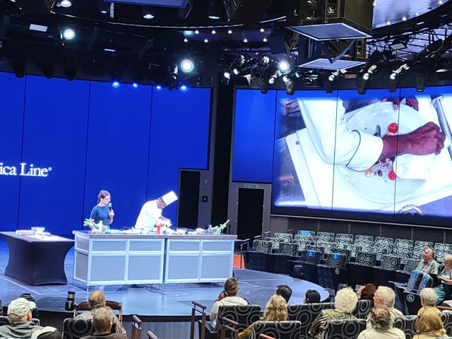
Lunch today was in the Pinnacle Grill, the paid steakhouse. Lunch is served here on sea days for $20 per person plus 18%. To start we ordered cocktails. Becky had the Ritz Cocktail - maraschino liqueur, Courvoisier, Cointreau, lemon, Champagne. I had the Sao Paulo, the ingredients sounded good and I thought I’d give it a try. It was OK, but I wouldn’t get it again. Becky liked the Ritz Cocktail.
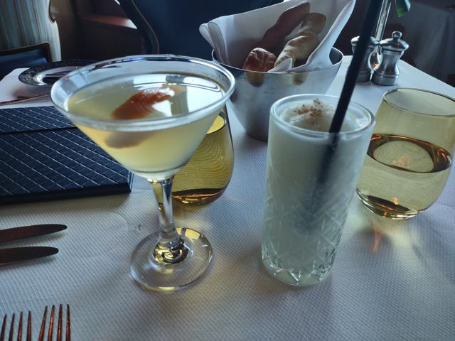
We both had the wedge salad, Becky had the Lamb chops, roasted baby beets with blue cheese and Key lime pie. I had the Sea Bass, Asparagus with Hollandaise sauce and Creme brulee. I had to send the sea bass back to be cooked a bit more. After that, it was good.
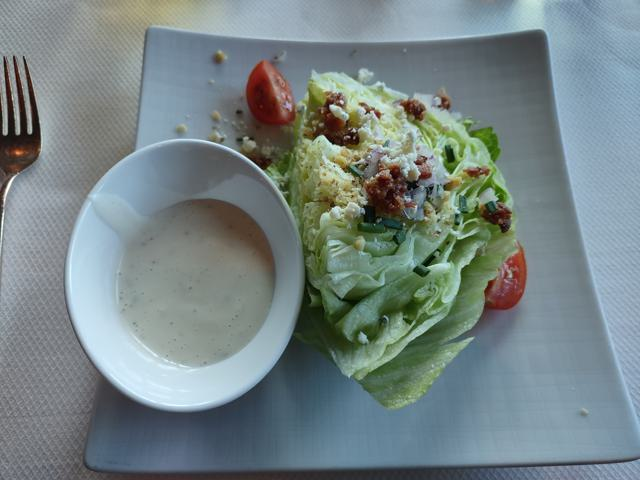
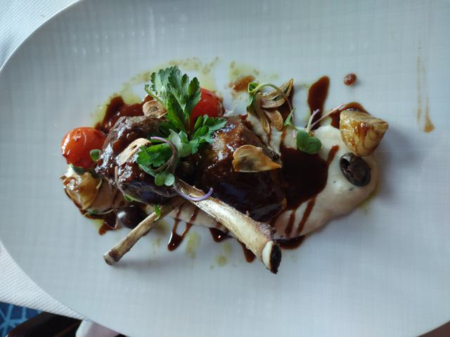
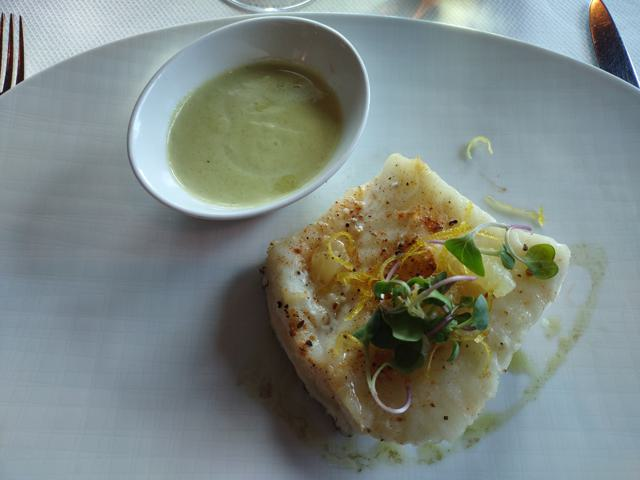
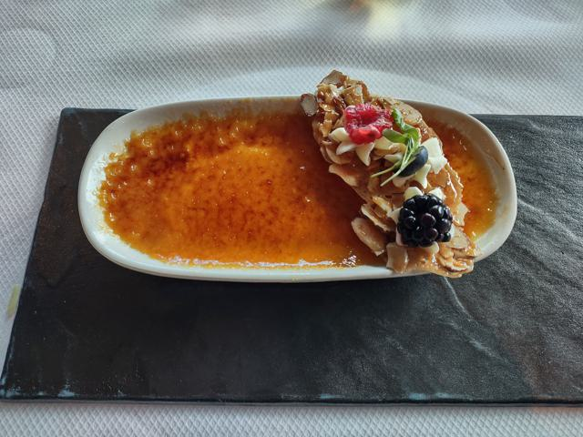

In the afternoon we attended trivia but we sat off to the side since it was packed. The theme was travel and from clues you needed to guess the city. We knew about half of the answers.
Since today was another sea day, tea was served at 3pm which we ordered to be served in our room and we enjoyed tea on our balcony. We were on the shaded side of the ship and the temperature was 70F. So it was nice to have afternoon tea out in the fresh air.

After dinner we attended the show in the main theater which was by the performer Tyler Bryce – his show combined comedy, singing and celebrity impressions. The show was entertaining.
Manzanillo - Friday
Woke early, showered and went to get coffee from the Neptune lounge at 7am. Becky skipped coffee since today we have a shore excursion with a long bus ride. For breakfast, Becky had an omelet and I had an Indian breakfast entre with two sausages on the side since this is a Indian vegetarian breakfast. I’ve had this on previous cruises and I like it; it’s a bit on the spicy end of the spectrum.
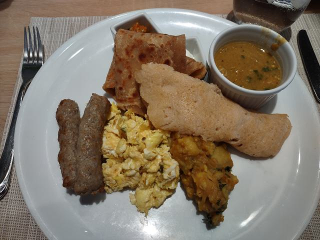
Today we arrived in Manzanillo around 930am and the ship was cleared by 10am. Our tour is called “Manzanillo’s Many Talents: Salt, Fruit & Clay Bricks”. The tour bus took us through the surrounding country. Coconut, mango, papaya, sugar cane and bananas are grown here. Our first stop was to a sea salt production facility; then onto a mango farm. The third stop was to a brick making facility. The final stop was to a little beach town called Balneario El Paraiso, where we had a snack and sampled some of the local fruit. The tour lasted about five hours, cost was $70 per person and we used some of our shore excursion credit to pay for the ticket. The tour was decent and it was interesting to see the tropical farms.
Here are a few pictures from the excursion.
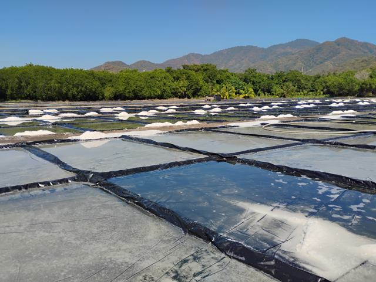
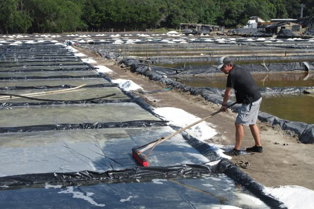
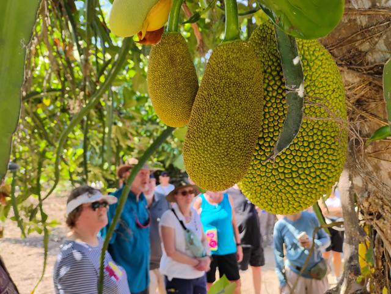
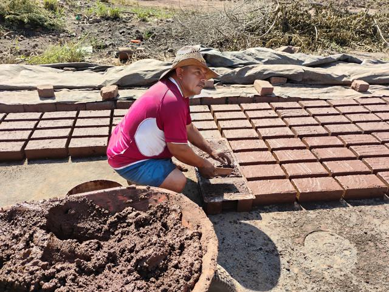
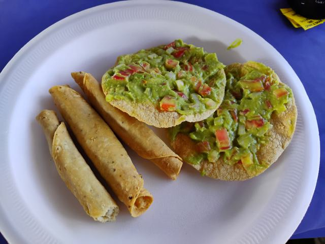
Puerto Vallarta - Saturday
We were up at 6am. It was still mostly dark outside but I could see that the ship had entered the harbor in Puerto Vallarta. We had our first cup of coffee in the Neptune lounge. Then we stopped by the Dutch Cafe for another cup of coffee. I decided to order an espresso (made from a legitimate espresso machine) and Becky ordered a latte. For breakfast Becky ordered buckwheat pancakes and I ordered the Pan Asian Breakfast.
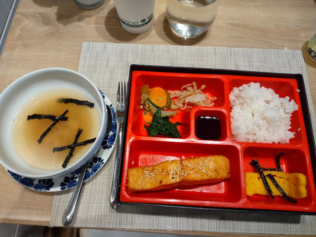
We spent the day by the main pool. The retractable roof was open and I sat at a table in the shade where I was able to read my book. Becky moved back and forth between a lounger in the sun and one in the shade. The water in the pool wasn’t too cold as it can sometimes be. By mid morning the ship was mostly empty since the majority of passengers had gone ashore. For lunch we ordered a pizza using the ship’s app. The app also informed us when the order was ready, which was very convenient. We ordered a pizza called the Tribeca. I can’t remember when I last had a pizza, maybe six months ago. The pizza was good. Around 2pm passengers started to return and the loungers around the pool started to fill up. A bit later we went back to our room and sat on our balcony.

Dinner was at the Pinnacle Grill. Becky had the Short Ribs and I had the Filet Mignon. The food was good, but we canceled our other Pinnacle reservations since the hostess wants to seat us at the most undesirable tables and the tables in the restaurant are way too close together.
Mazatlan - Sunday
We were up before sunrise and the moon was a bright full moon.
We ordered room service for breakfast, scrambled eggs, sausage, yogurt, fruit and toast. We skipped the coffee.
Our tour today is called Mini-Speedboat & All-Inclusive Beach Escape ($119 per person). Our meeting time was in the theater at 745am. We had about a 30 minute wait before our tour was called and there were 12 of us on this tour. The bus was open air (no windows) and it was a bit windy and chilly. It was mostly sunny in the morning with a temperature of 68F.

After arriving at the El Cid Marina Resort we were given a rum punch welcome drink. Having a drink before driving a mini speed boat must be a Mexican thing. The top speed of the boat was probably 15 mph at most, so having a little buzz while boating makes up for the lack of speed. There were two parts to the mini speed boat tour, the first was a slow single file tour of the marina. Then we got to an area of the marina where we could go as fast as the boats could go. Driving the mini speed boats was fun. Seeing the houses and boats in the marina was interesting. All in all, it was kind of fun and different from the typical excursions.

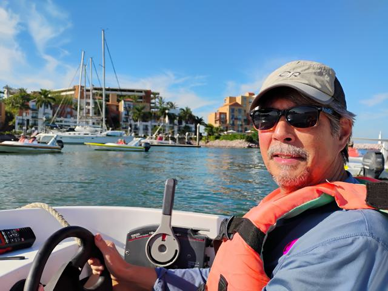
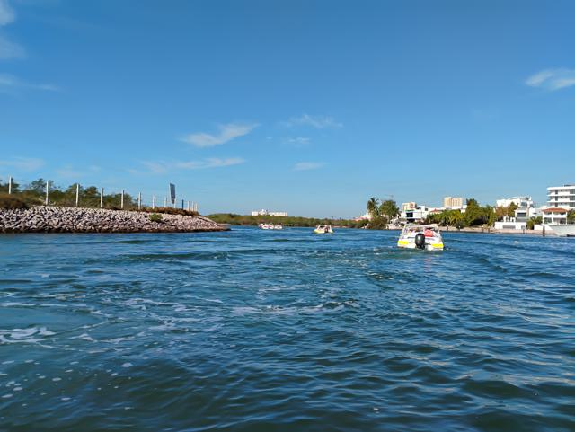
After the boat tour we were allowed to use the beach and pool facilities of the resort. Lunch was served to us at our palapa. The food was good, we ate most of it, even though we weren’t that hungry. The drinks were included. Later we went for a swim in the resort pool. At 130pm we got back on the bus for the 40 minute ride back to the port.
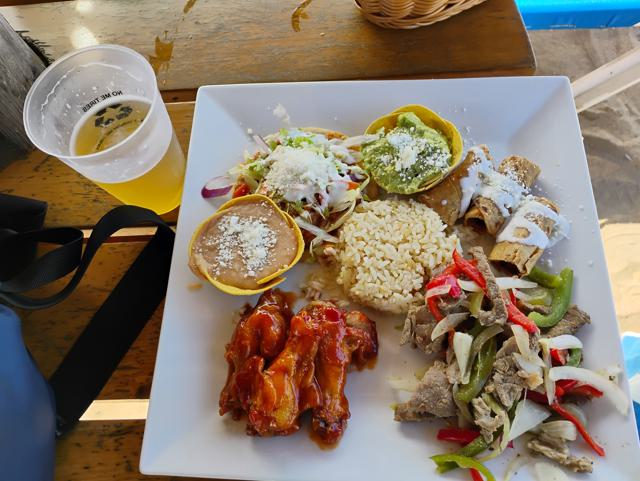
The only item we didn’t care for were the chicken wings in BBQ sauce.
Sea Day - Monday
Today was a sea day between the ports of Mazatlan and Loreto. The weather was mostly sunny and the temperatures were in the low 70’s. For breakfast I ordered something I haven’t tried before, the Asian Congee. This kind of looked like oatmeal. It was very spicy and good.
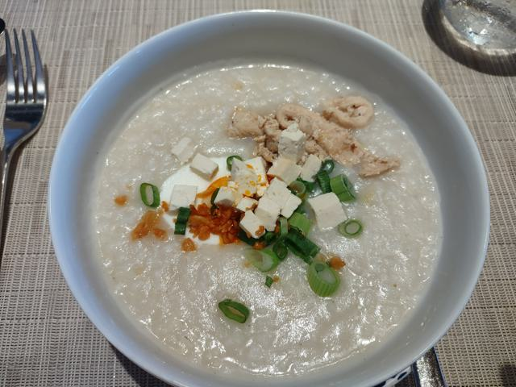
In the morning we attended another cooking demonstration, this time the dish was fish tacos. Then we attended another watercolor class and arrived about 30 minutes early. Like the watercolor class on the previous day, the class filled up about 20 minutes before the start and many people were turned away.
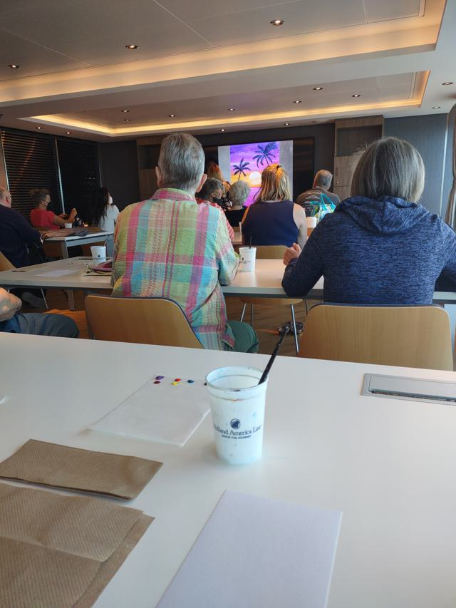
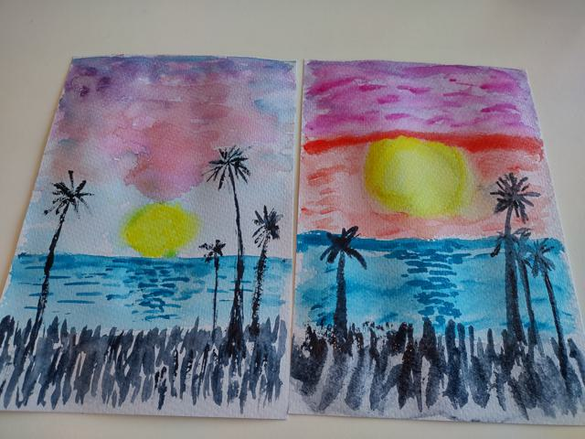
We had lunch in the Dutch cafe. I had the split pea soup, which was much better than on the first day. We shared a grilled ham and cheese sandwich and a basket of fries.
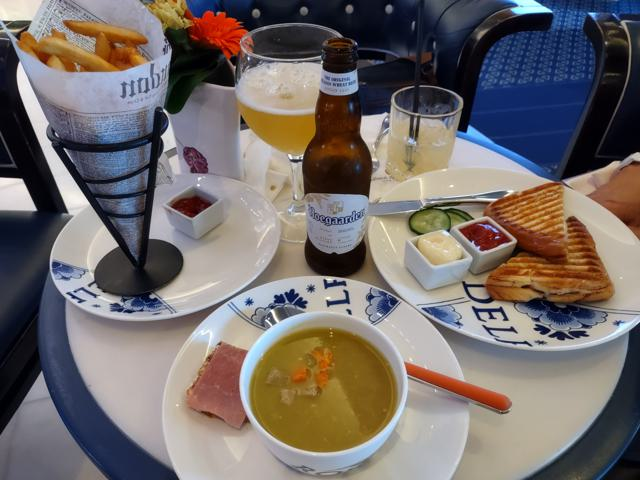
After lunch we shared a Bossche Bol. Very messy and not my favorite. We cut the ball in half to share, but I only had one bite.
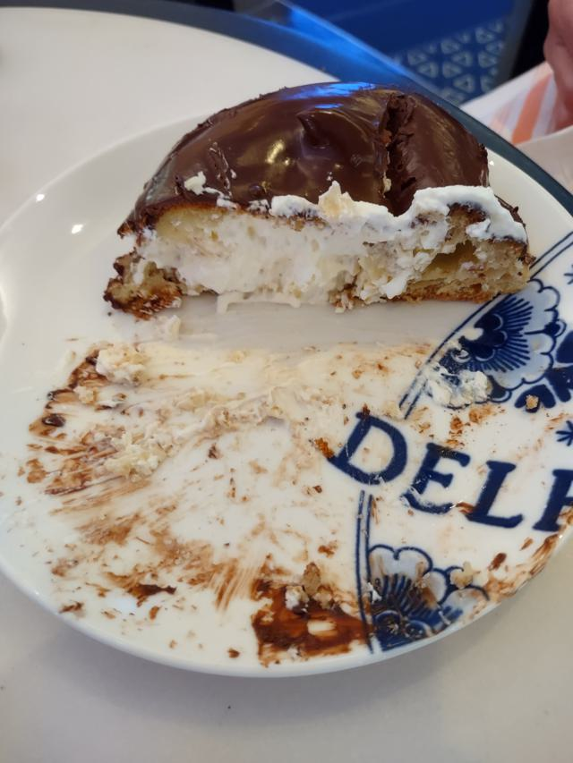
At 1pm we attended a mixology class where we drank too much. The drinks were cosmos, lemon drop, manhattan and old fashion.
For dinner, Becky had the Port Braised Lamb Shank. She didn’t care too much for the Lamb shank.
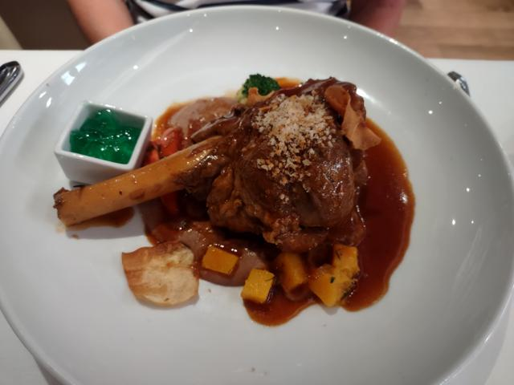
I had Fresh Rockfish. The fish was good.
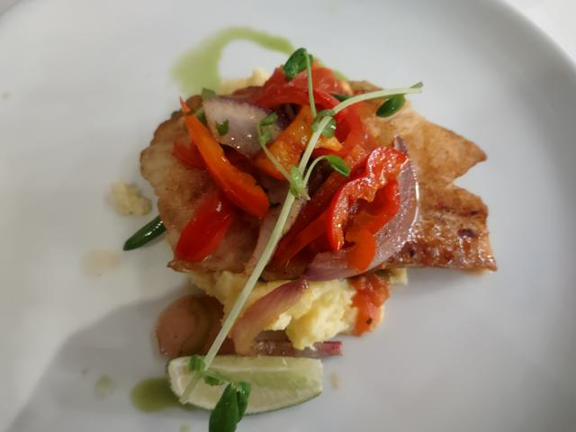
Loreto - Monday
Today we were in Loreto, my favorite stop on the itinerary. There is no pier for cruise ships, so we tendered ashore using the ship’s lifeboats. The weather was sunny and the temperature was in the low 70’s. We were on the first tender at 8am for the 15 minute ride to shore. The water was calm in the morning so the ride wasn’t too bad. Once ashore we made our way to the pedestrian walkway called Juan María de Salvatierra. Hotels, restaurants, shops, City Hall and the Mission of Our Lady of Loreto are along this street.
Here are a few photos from our walk.
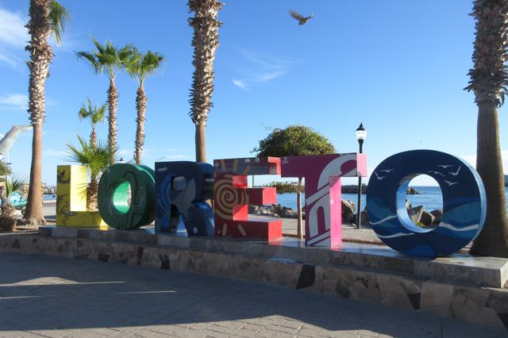
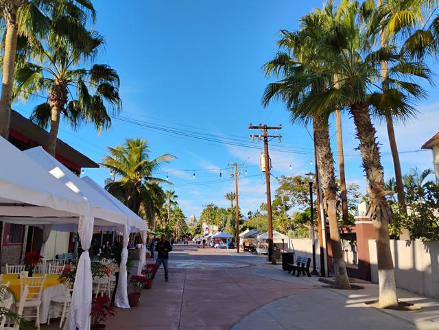
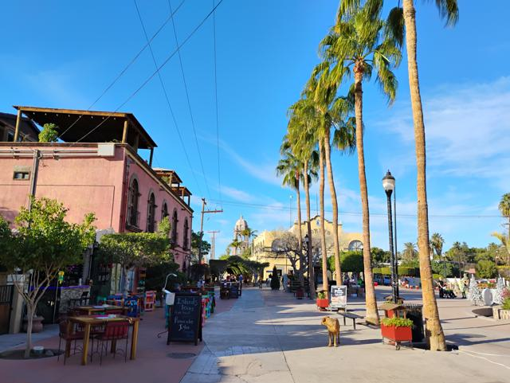
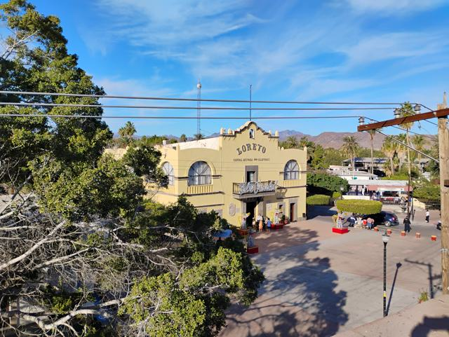
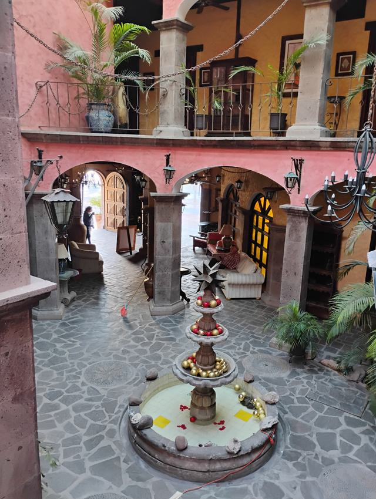

Pichilingue (La Paz) - Wednesday
My breakfast this morning was the European Cold Breakfast Plate. I’ve been working my way through the various breakfast options that are unique to Holland America Cruise Line. I have never tried herring in sour cream or even just herring, so I asked our waiter if he had had it before, he said, ‘I have never tried that one’. As you can see in the photo, the herring (small serving of gray fish next to the tomato) didn’t come in sour cream. I took a small bite of the herring, it was pickled with onions and it tasted like sweet bread and butter pickle chips. The fish was soft, so the texture and taste was like a mushy pickle. I made a small sandwich with the items on the plate, shared some of the ham with Becky and finished about half of the herring.
The ship docks at the port of Pichilingue, which is about 12 miles north of La Paz. We were on the 8:30 am bus and it took about 20 minutes to get to the city bus terminal. We didn’t have much planned for our visit other than to walk along the Malecon. There happened to be several streets that were blocked and set up with tents for vendors to sell Christmas items and souvenirs.
Here are a few random photos from our walk.

Cabo San Lucas - Thursday
Today the ship was anchored in the bay of Cabo San Lucas. Passengers wishing to go ashore did so by riding tenders. The tender operations started at 7am and the last tender back to the ship was at 12:30pm. So only a half day in port. A Carnival ship was also anchored in the bay a short distance from us.
At breakfast I’ve been making my way through the more exotic selections and for today’s choice I ordered two entrees. I wasn’t sure I would like or eat much of the Herring, so I ordered it as an afterthought. My first entree to arrive was the Kippered Herring and it was OK. The fish was fried and definitely had a fishy smell. I probably would not order this one again.
My second entree was the Avocado Toast with Poached Egg. This was good and I would order it again. I ordered the poached eggs well done, otherwise they would come runny egg yolks and sometimes with the egg white not fully cooked.
We spent the morning by the main pool. At 10am I went to the spa for my hair cut appointment, $45 plus 18% service charge. My hair cut was good. A bit into the cutting I had to tell him to cut it shorter since he was being too conservative. What’s the point of getting a haircut if he’s only going to cut ¼ inch?
For lunch Becky ordered a hamburger from the Dive bar and I ordered a tuna sandwich from the deli.
For our dinner entrees, Becky ordered the pasta and I ordered the duck breast. I’ve never had duck breast before and I didn’t care for the taste of the meat, I thought it tasted like liver. I only ate about half of the duck breast.
Becky had the Ricotta and Spinach Tortellini. She liked her pasta. I tried to get her to have a taste of the duck, but she was not up for it. She didn’t believe me when I told her that it tasted like Lamb.
Sea Day - Friday
Today is the final full day of the cruise and it was a sea day.
My breakfast this morning was the Ham and Cheese Skillet. This was a nice breakfast and I would definitely order this again.
After breakfast we went to listen to coffee with Alex, the cruise director. She was interviewing the captain, which was interesting. He talked about his career and how he became a cruise ship captain. He originally studied electronics in college and then went to the merchant marine academy when he thought we would give sailing a try. He started as a cadet on a cruise ship in 1992.
Later we did some packing and after lunch we watched a movie. There was a carnival being held on the pool deck so we went to see what that was about.
For dinner Becky ordered the Lasagna and I ordered the fish. The Lasagna was really good.
After dinner we listened to the piano players in Billboards on Board. These are the two pianos that the signers play. Tonight was all requests. Here is a photo of the pianos when the lounge was empty. Most evenings we would listen to the signers for a while before going to bed.
Disembark, San Diego - Saturday
The Koningsdam arrived in San Diego around 4am. It was still very dark outside, so all I could see were the lights from the houses and street lights. At 6am I went to the Neptune lounge for a cup of coffee. Breakfast this morning was from a reduced menu. I suppose that on disembarkation day, since the breakfast service ends early only the items that are quicker to make are offered. We both ordered omelets. After breakfast we did our final packing and waited for the ship to call the first disembarkation group, which was Self Assist starting at 715am. At 730am we left the room.
The elevators going down to deck A were full. After waiting and only seeing full elevators, I pushed the up arrow button and a mostly empty elevator arrived. So we had to go up to go down. By 8am we were off the ship and at Customs and Border Protection facial recognition check point. Becky went through right away, but it took three tries of facial recognition before I got the green light.
We left the cruise terminal and walked across the street where I called Lyft to take us to the airport rental car terminal. The traffic was not too bad and we arrived home around 11:30 am.